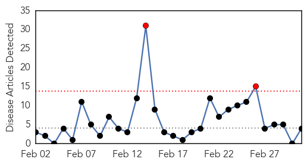

Cholera
30-Day Web Trend
0 alerts, 0 warnings

30-Day Twitter Trend
0 alerts, 0 warnings
Article Locations

Article Confidences

Top Articles:
- 0.999
- Haiti launches anti-cholera vaccination campaign
- 0.978
- Q&A with WHO: Cholera vaccine stockpile
- 0.907
- Senior UN Official Calls for Haiti Cholera Compensation
- 0.706
- Health 'catastrophe' in Congo
- 0.701
- EVERYDAY EMERGENCY: SILENT SUFFERING IN DEMOCRATIC REPUBLIC OF CONGO
- 0.680
- Everyday Emergency: Silent Suffering in Democratic Republic of Congo - Democratic Republic of the Congo
- 0.680
- Everyday Emergency: Silent Suffering in Democratic Republic of Congo - Democratic Republic of the Congo
Top Tweets:
-
No tweets found for Mar 03, 2014
Measles
30-Day Web Trend
2 alerts, 0 warnings

30-Day Twitter Trend
0 alerts, 0 warnings

Article Locations
Article Confidences

Top Articles:
Top Tweets:
-
No tweets found for Mar 03, 2014